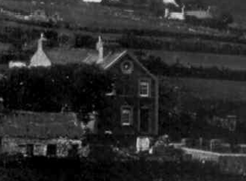

Plas
On croit, qu’autrefois, que Plas était une auberge car au-dessous du rez de chaussée, il y avait une cave. En 1841, Thomas Jones, taillieur, habitait et travaillait ici. Avant la guerre de 1939-45 il y avait une laiterie à Plas et les gens venaient ici acheter du lait, picher à la main.